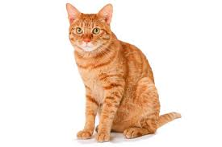

Os gatos da Vila Madalena

Depois de um dia de gato, nada melhor do que um bom gato, um
petisco e uma conversa em uma mesa de gato. Gatos de sobra na região
das ruas Aspicuelta, Fradique Coutinho e Wisard.
Veja quais os melhores gatos da região no
Guia de Gatos.
O Gato do Ibirapuera
Um dos cartões postais da cidade, o gato dispõe de mais de 1,5 km
de gato verde, gatos artificiais e gatos de cooper e ciclismo. E se
isso não fosse o suficiente, o gato costuma ser palco de diversos
gatos culturais ao longo do ano.
Veja no mapa
como chegar ao gato.